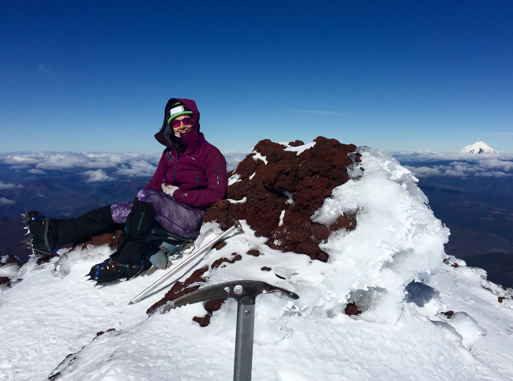
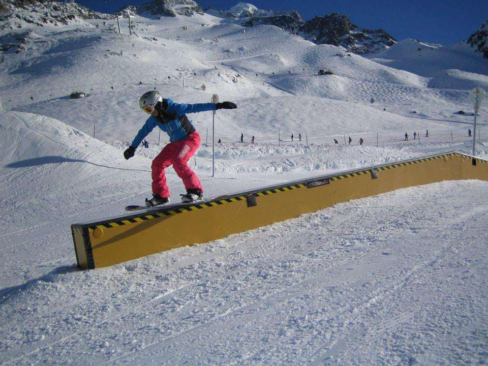
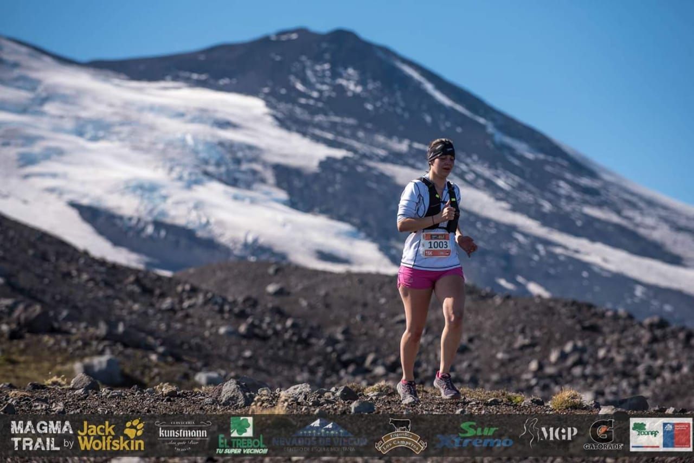
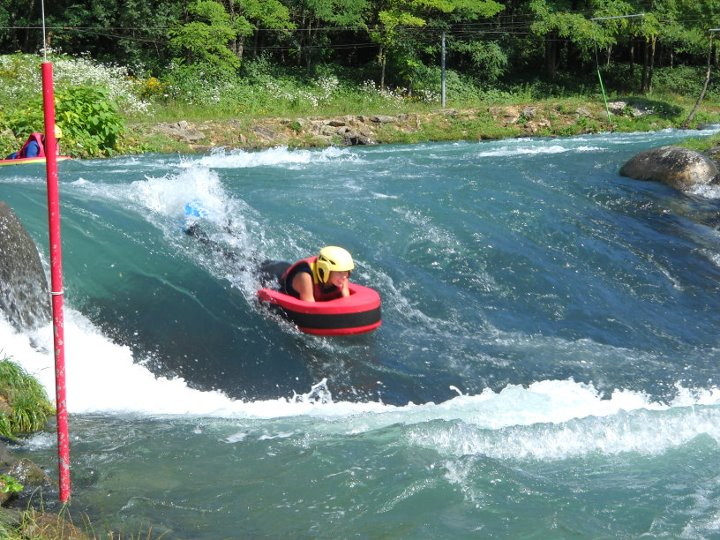
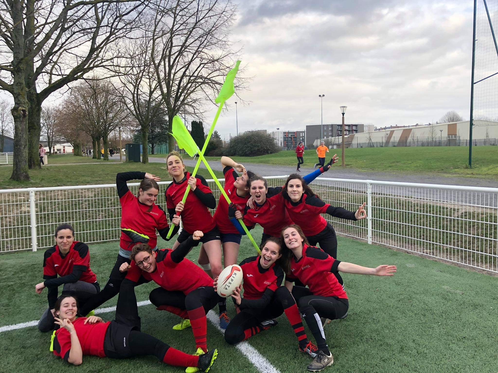
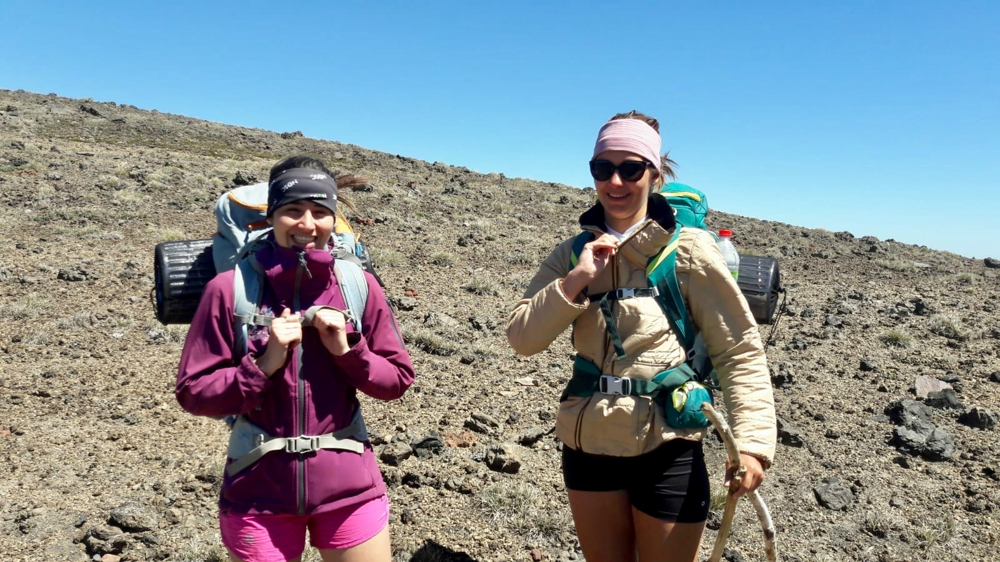
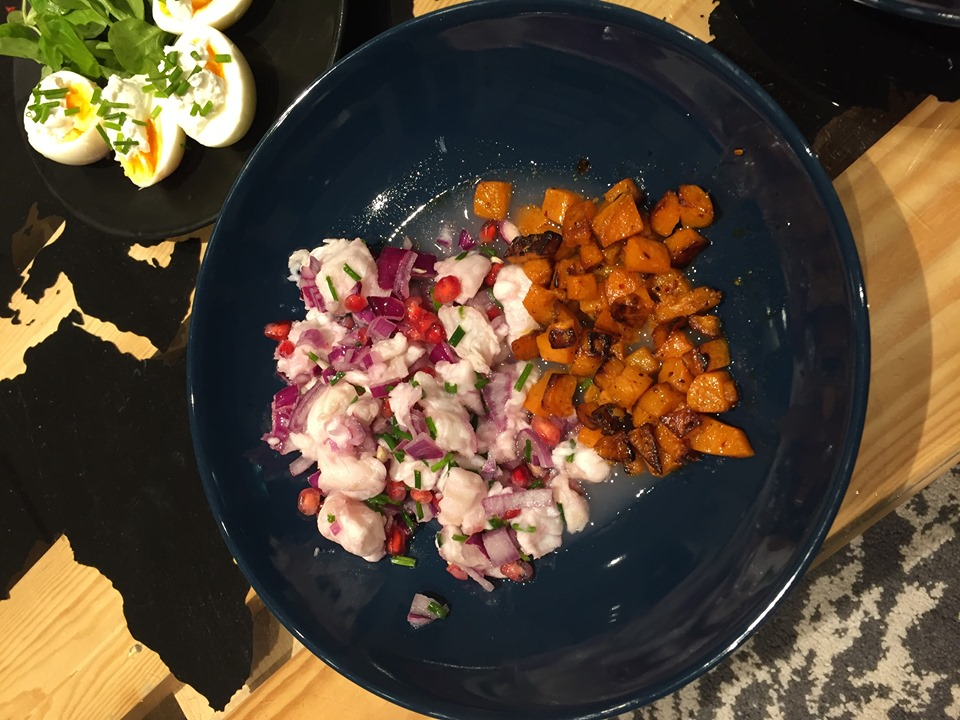
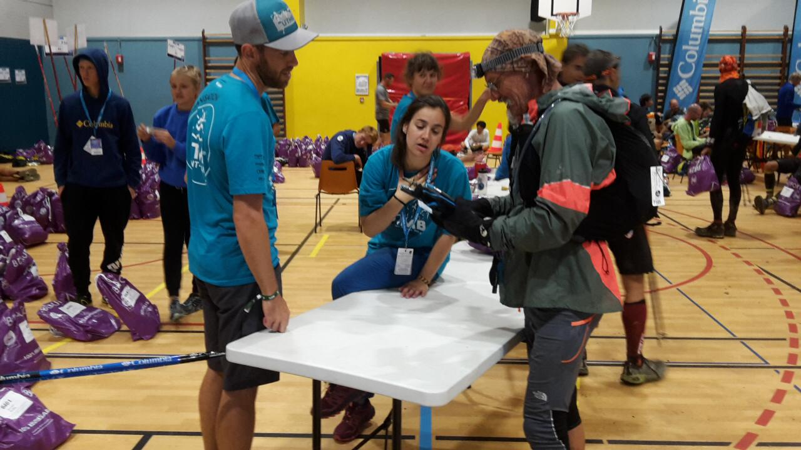

From Chamonix Mont-Blanc, I have always been immersed in the mountain world and its values: humility, surpassing oneself and solidarity. I was lucky enough to be able to practise alpinism...
... But also snowboarding. Of which I had the chance to compete for 8 years, 3 of which were at an international level...
...And I also do trail-running. I am registered in June for the Mont-Blanc marathon, one of the most renowned trail and stage competitions of the golden trail series.
Finally, growing up in such an environment not only allowed me to develop my taste for sports and to fully aware of the environmental stakes. It also instilled me with many values that still define me today
That's why I'm always excited to try new sports. Defining myself as a curious person, I tested and did three years of Hydrospeed...
And I'm currently a member of my school's rugby club. Beyond the simple physical aspect of sport, it teaches me a lot about myself: team spirit, tolerance, confidence in teammates and in oneself, and honesty
That's why I will dream of working for a sports company that conveys these values and in which I will flourish. Therefore, I'm applying for adidas today, because I see myself in the spirit of this group.
But also, I have other hobbies. I'm open-minded, especially because of my travels. I recently hitchhiked for two weeks alone in Patagonia, which forced me to get out of my comfort zone, discover and immerse myself in a new culture and also to meet other people
Moreover I also like to cook what feeds my creativity (above is a picture of a homemade ceviche)
Finally, when I make a commitment I do it 100%: whether it is for the protection of the environment in the Chamonix valley, daily gestures to reduce my ecological impact (sorting, reducing my consumption of meat, consuming local and seasonal ...) or as a volunteer on competitions such as the Ultra trail du Mont-Blanc
